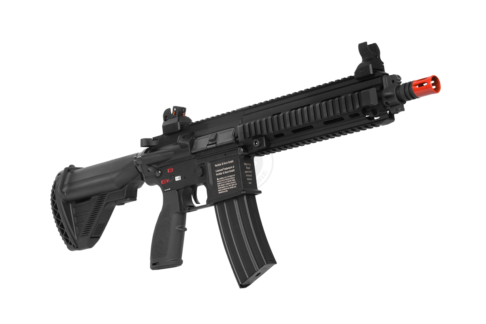
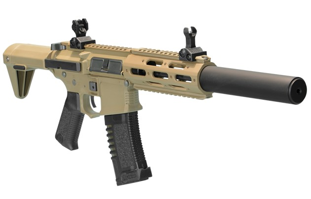
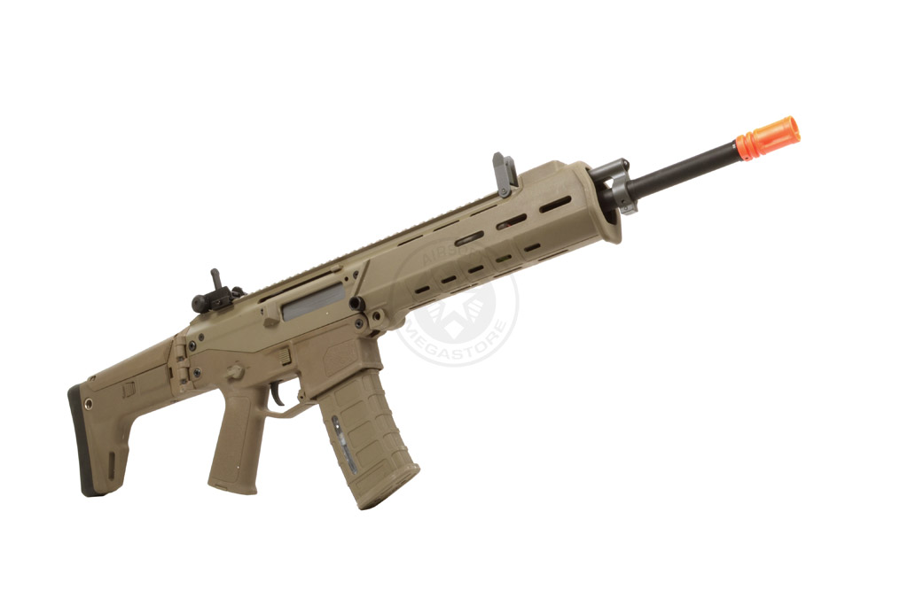
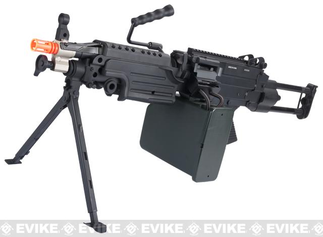
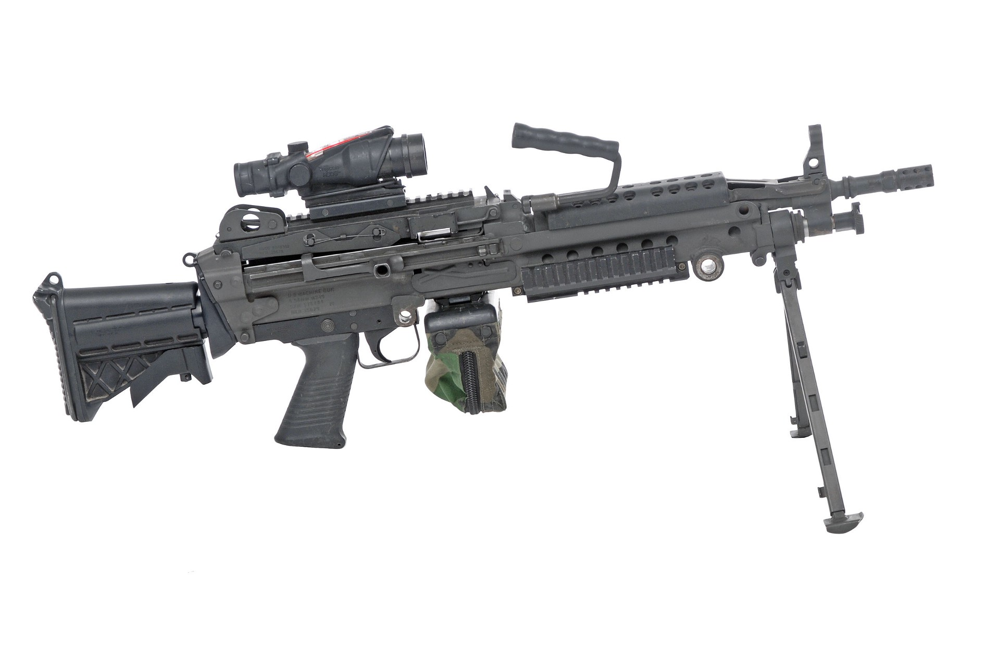
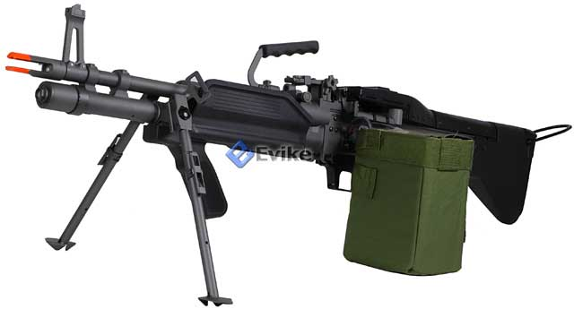

Yang ketiga Adalah Assault Rifle biasanya digunakan dalam jarak menengah sampai jauh, CQB(Close Quarter Battle),dan AA IPSC. Jenis ini adalah jenis yang paling fleksibel karena bisa digunakan dalam berbagai situasi.

Yang ke-empat adalah machine gun, tipe ini digunakan untuk player yang bermain dalam tempat yang luas, tipe ini biasanya digunakan untuk defend wilayah, karena tipe ini terbilang sangat berat untuk dibawa lari-lari.
jadi hanya menjaga di objektif dengan menaruh Unit-nya di tempat datar.

1 | 2 | 3